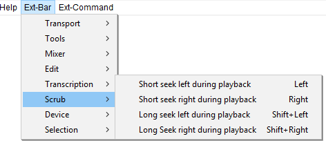

Ext-Bar Menu: Scrub
The Ext-Bar > Scrub Menu provides menu equivalents for the short and long seek commands.
- Click, or hover, on any menu item in the image to read about that command. Skip the image
- 
These commands skip the playback cursor backwards (left) or forwards (right) by a short or long period of time. You can change the length of the default short or long period to be skipped at "Seek Time when playing" in the Playback Preferences.
|
You cannot seek backwards to left of the current position of the playback cursor. |
Short seek left during playback Left
Moves play head left by 1 second.
Short seek right during playback Right
Moves play head right by 1 second.
Long seek left during playback Shift+Left
Moves play head left by 15 seconds.
Long Seek right during playback Shift+Right
Moves play head right by 15 seconds.